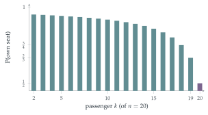

STEP II 2021, Question 11
Read the question before you go on. It is in the STEP II paper in OCR’s download of the 2021 STEP papers (a zip file): www.ocr.org.uk/Images/696588-2021-past-papers.zip
The hook
A hundred passengers board a full plane. The first has lost their boarding card and sits anywhere. Each later passenger takes their own seat if it is free, and otherwise a random free seat. What is the probability that the last passenger gets their own seat? The chaos might cascade through the whole plane, so you might expect a small probability; or perhaps most passengers are unaffected and it should be close to \(1\).
The answer is exactly \(\frac12\), for any number of passengers. This question proves it with a recurrence and induction. But there is also a beautiful one-line argument by symmetry, which explains why the answer is \(\frac12\) and lets you write down the answer for any passenger at once.
Before you start
Work out \(P_2\) and \(P_3\) by listing what can happen.
With two seats, \(T_1\) takes \(S_1\) (then \(T_2\) gets \(S_2\)) or \(S_2\), each with probability \(\frac12\): \(P_2 = \frac12\). With three seats: if \(T_1\) takes \(S_1\) (probability \(\frac13\)), everyone is fine; if \(T_1\) takes \(S_3\), \(T_3\) loses; if \(T_1\) takes \(S_2\), then \(T_2\) chooses between \(S_1\) and \(S_3\) at random, and \(T_3\) is fine only if \(T_2\) chooses \(S_1\). So \(P_3 = \frac13 + \frac13\cdot\frac12 = \frac12\).
Working it through
Stage 1 The recurrence
Suppose \(T_1\) sits in \(S_k\), with \(2 \leq k \leq n - 1\). What happens to passengers \(T_2, \ldots, T_{k-1}\)? When \(T_k\) arrives, which seats are free, and how does the situation compare with a smaller train?
Passengers \(T_2, \ldots, T_{k-1}\) find their seats free and sit in them. When \(T_k\) arrives, the free seats are \(S_1\) and \(S_{k+1}, \ldots, S_n\): there are \(n - k + 1\) of them. \(T_k\) chooses one at random, and from then on each passenger takes their own seat if free and a random one if not. This is exactly the original problem with \(n - k + 1\) seats, \(T_k\) playing the role of the first passenger and \(S_1\) playing the role of \(T_k\)’s “own” seat (the one that, if taken, sorts everything out). So the conditional probability that \(T_n\) gets \(S_n\) is \(P_{n-k+1}\).
Now condition on \(T_1\)’s seat, each with probability \(\frac1n\): \(S_1\) gives success for sure, \(S_n\) gives certain failure, and \(S_k\) gives \(P_{n-k+1}\). So \[P_n = \frac1n\Bigl(1 + 0 + \sum_{k=2}^{n-1}P_{n-k+1}\Bigr) = \frac1n\Bigl(1 + \sum_{r=2}^{n-1}P_r\Bigr). \qed\]
Stage 2 The answer
\(P_2 = P_3 = \frac12\). Guess \(P_n\) and prove it by strong induction.
Claim: \(P_n = \frac12\) for all \(n \geq 2\). It holds for \(n = 2\). If \(P_r = \frac12\) for \(2 \leq r \leq n - 1\), then \[P_n = \frac1n\Bigl(1 + \frac{n - 2}{2}\Bigr) = \frac1n\cdot\frac n2 = \frac12. \qed\]
Stage 3 The penultimate passenger
Try to find a slicker argument. At the end, which seat is left for \(T_n\)? Could it be \(S_2\)?
The last seat left for \(T_n\) is either \(S_1\) or \(S_n\). It cannot be \(S_k\) for \(2 \leq k \leq n - 1\), because \(T_k\) would have taken it. And every random choice made before then treats \(S_1\) and \(S_n\) symmetrically: whenever a displaced passenger chooses, \(S_1\) and \(S_n\) are equally likely to be picked. The first of the two to be chosen decides the outcome, so each is equally likely to be the one left: \(P_n = \frac12\).
The same argument works for any passenger \(T_k\), \(k \geq 2\). \(T_k\) loses their seat only if some earlier passenger took it. The displacement continues until someone picks \(S_1\); among the seats \(S_1, S_k, S_{k+1}, \ldots, S_n\), which are all treated alike by the choosers before \(T_k\) arrives, the first to be chosen is equally likely to be any of these \(n - k + 2\) seats, and \(T_k\) loses only if it is \(S_k\). So \[\mathrm{P}(T_k \text{ sits in } S_k) = \frac{n - k + 1}{n - k + 2}.\] For \(k = n - 1\) (with \(n \geq 3\)) this gives \(Q_n = \frac23\); and \(Q_2 = \frac12\), since then \(T_{n-1} = T_1\), who sits in \(S_1\) with probability \(\frac12\).■

Looking back
Reduce to a smaller copy. After \(T_1\) sat in \(S_k\), the rest of the problem was the same problem with fewer seats.
Strong induction. The recurrence involved all smaller cases, so the induction assumed the result for all of them.
Find the symmetry. The seats \(S_1\) and \(S_n\) are interchangeable throughout, which explains the \(\frac12\) without any algebra.
What’s really going on
Symmetry arguments
The second proof is an example of a powerful idea in probability: if two outcomes are related by a symmetry of the random process, they have the same probability. The process here does not distinguish between \(S_1\) and \(S_n\) until one of them is chosen, so they must be equally likely to be the survivor. Symmetry arguments often replace long calculations with a single observation. The next few sections are full of them: an extra coin toss in Section 12.6, a knockout draw in Section 12.7.
How many passengers are displaced?
The number of displaced passengers (those who do not get their own seat) is also nicely behaved. \(T_1\) is displaced unless they choose \(S_1\), and \(T_k\) (for \(k \geq 2\)) is displaced with probability \(\frac{1}{n - k + 2}\). Adding, the expected number of displaced passengers is \[\Bigl(1 - \frac1n\Bigr) + \Bigl(\frac1n + \frac{1}{n - 1} + \cdots + \frac12\Bigr) = H_n - \frac1n,\] roughly \(\ln n\): even in a plane of \(300\) the chaos affects only about six passengers on average. The harmonic numbers, again (Section 9.11).
The thinking skill
If the random process cannot tell two outcomes apart, they are equally likely. Find the moment at which they first become distinguishable.
At university, symmetry arguments appear throughout probability, from the reflection principle (Section 9.10) to exchangeability, the property that a sequence of random variables has the same distribution in any order, which is the basis of much of modern statistics.
Try this next
Two forgetful passengers. If the first two passengers both choose at random, what is the probability that the last gets their own seat?
Displaced passengers. Verify the expected number of displaced passengers for \(n = 3\) by listing the possibilities.
An indirect route. Show, using the recurrence, that \(\sum_{r=2}^{n-1}P_r = \frac{n - 2}{2}\) is consistent with the symmetry argument.
The last seat. Show that, conditional on the last passenger not getting their own seat, the last passenger gets \(S_1\) with probability \(1\). Why?
Further reading
Peter Winkler, Mathematical Puzzles: A Connoisseur’s Collection (A K Peters). Includes the airline seat puzzle and many others solved by symmetry.
Frederick Mosteller, Fifty Challenging Problems in Probability (Dover). A classic collection.
Joseph Blitzstein & Jessica Hwang, Introduction to Probability (CRC Press; free online).